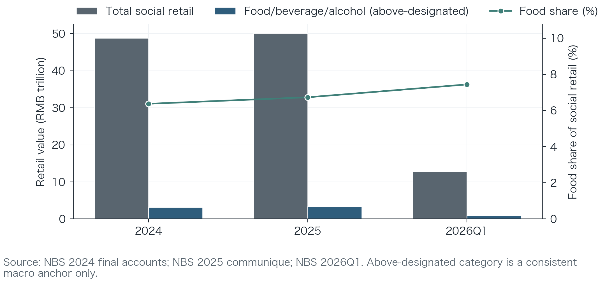
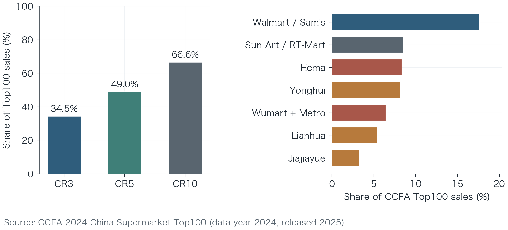
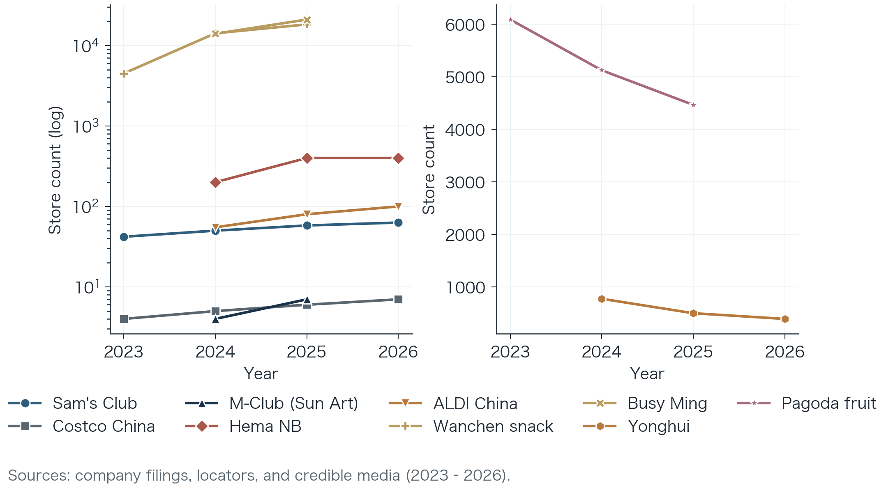
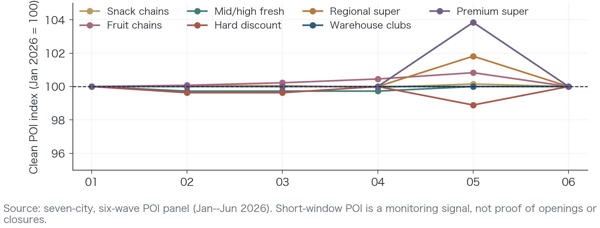
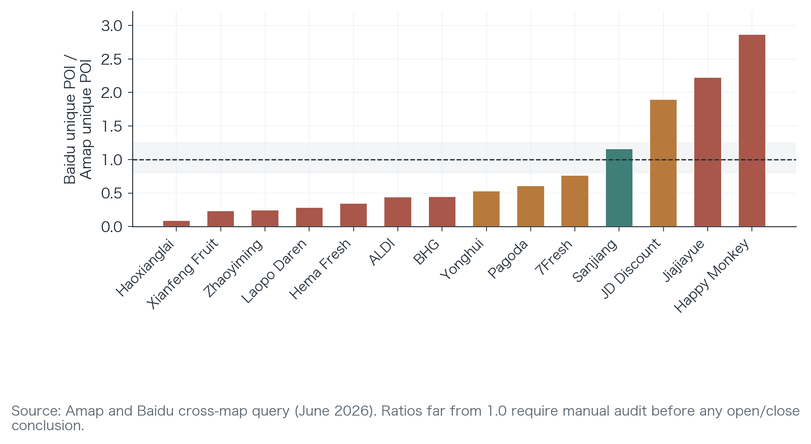
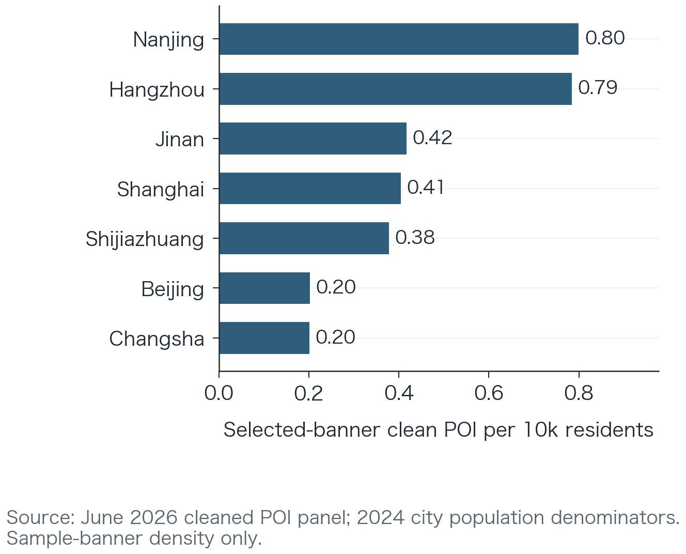
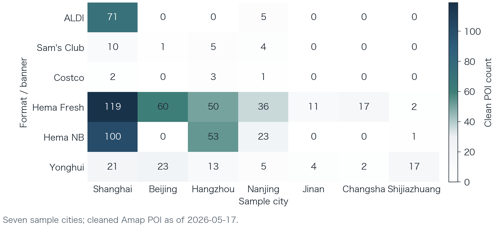
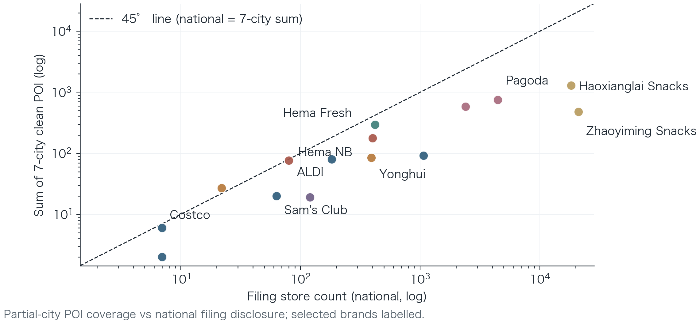
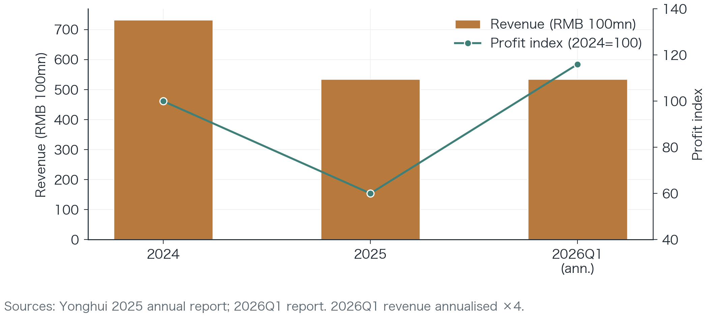

How to Read This Report
This report is an independent industry research document for retail executives, brand owners, commercial real estate operators, investors, and sector analysts. It focuses on industry structure, operating implications, and management decisions. The report addresses three operating questions:
Which food retail formats are gaining share, and which are contracting or remodelling?
Does growth reflect demand expansion, or channel share migration and cost restructuring?
How should firms adjust store networks, assortment, fulfilment, and capital allocation in 2026–2027?
The report cut-off is 14 June 2026. Company figures prioritise exchange filings, prospectuses, government statistics, industry association releases, and official store pages. Management letters and map POI data serve as operating signals only and are not mixed with statutory period-end store counts. Unless otherwise stated, all figures should be read using their cited disclosure dates.
Bracketed reference codes (e.g. [E008]) correspond to the evidence register in Appendix A, with public links and page references for independent verification. Market rumours without support from official documents, association originals, or verifiable publications are excluded from conclusions. This approach prioritises traceability over completeness when evidence is incomplete.
Public Use Note
This report is provided for industry research and informational purposes only. It does not constitute investment advice, securities research, legal advice, or a recommendation to buy or sell any securities, products, or services. Scenario analysis, working ranges, valuation frameworks, and operating thresholds are analytical tools for industry discussion; they are not forecasts, guarantees, or audited company disclosures, and require independent judgement before business decisions.
Company names, brand names, and trademarks are used only for industry analysis and remain the property of their respective owners. No endorsement or affiliation is thereby implied.
Author affiliations are provided for identification only. This report is an independent research document and does not represent the official position of any university, company, or institution.
Executive Summary
Main Call
Main thesis. China’s food retail sector is not a total-demand high-growth story. It is a stock-demand reallocation story: household food tasks are moving across fulfilment radii, product standardisation levels, and cost systems. In 2026–2027, the winners will not be formats that merely advertise lower prices, but operators that institutionalise at least one durable advantage: lower unit price, lower time cost, lower quality risk, or lower fulfilment cost.
| Format / System | 2026–2027 Base-Case Call | Core Verification Metrics | Main Falsifier |
|---|---|---|---|
| Warehouse clubs | Low store count but high-radius assets keep gaining planned stock-up and quality-certainty tasks | Active members, renewal, annual spend, private-label repeat, fulfilment cost | Card growth without repeat spend or store payback |
| Community hard discount | Gains high-frequency replenishment share where density, private label, and narrow assortment lower real cost | Mature-store contribution, rent ratio, shrinkage, private-label quality, warehouse-to-store distance | Low price depends on subsidies or supplier concession |
| Snack-collection chains | Scale is already proven; next judgement shifts to franchise health and warehouse governance | Closure rate, franchisee payback, SKU turnover, warehouse radius, take rate bridge | Store growth masks weak mature stores or franchise disputes |
| Regional supermarkets | Not a broad recovery; value comes from closing weak stores and improving retained-store productivity | Remodelled-store sales, gross margin, labour productivity, closure cost, cash flow | Company revenue decline is not offset by retained-store quality |
| Instant retail / front warehouse | Time-cost industrialisation remains attractive, but only order-density cells can earn durable contribution | Orders per site, picking cost, rider cost, substitution rate, on-time rate | Subsidy-led order growth without contribution margin |
| Fruit and fresh specialists | Frequency is valuable but scale is constrained by trust, grading, shrinkage, and cold-chain control | Shrinkage, return/complaint rate, grading loss, origin control, repeat purchase | Store count grows faster than quality-control capacity |
Winner / pressure ranking. The base-case ranking is: (i) snack chains and warehouse clubs keep taking task-specific share; (ii) community hard discount keeps expanding where density and private-label trust are proven; (iii) instant retail wins only in high-order-density cells; (iv) regional supermarkets create value through retained-store productivity, not broad re-expansion; (v) fruit and premium specialists remain constrained unless trust, grading, and occasion use are visibly stronger. Winners combine repeatable demand, disciplined costs, and measurable unit economics.
Core falsifiers. The thesis weakens if FMCG ASP stabilises while low-price channels lose repeat traffic; if remodelled supermarkets regain both traffic and margin broadly; if member growth fails to convert to active spend; or if franchise closure/payback data deteriorate while store openings continue. They distinguish durable share gains from tactical discounting and cyclical rotation.
Five Evidence Tests
| Evidence Test | Current Reading | Why It Matters | Cadence |
|---|---|---|---|
| Market pool | 2025 total retail grew 3.7%; 2026Q1 total retail grew 2.4%, while above-designated grain/food grew faster [E004–E005]. | Food resilience exists, but it cannot fund simultaneous high growth in every channel. | Monthly |
| Price / volume | Bain–Worldpanel reports FMCG ASP fell in both 2024 and 2025, while selected discount and club channels grew far faster than the market. | Fast channel growth is more likely share migration and cost-system substitution than demand creation. | Quarterly |
| Network scale | Sam’s Club has 63 China stores versus Costco’s seven mainland warehouses; snack leaders disclose networks above 18,000 and 21,000 stores [E001–E002, E014, E059]. | Store count has different meanings by format: clubs are high-radius assets; snack chains are franchise-density systems. | Quarterly / annual |
| Portfolio quality | Yonghui reported 392 Q1 2026 stores, 327 remodelled, and 394 cumulative closures since 2025 [E053]. | Supermarket contraction can be value-positive only when retained stores improve after closure and remodelling cost. | Quarterly |
| Local density | The seven-city POI panel shows strong sample density in Shanghai, Hangzhou, and Nanjing, but map-provider divergence remains material. | Local choice sets, not national rankings, determine consumer substitution; POI must be audited before open/close claims. | Monthly |
Management Action Roadmap
| Priority | Action | Metrics to Monitor | Stop / Red Flag |
|---|---|---|---|
| P0 | Freeze expansion without task clarity and mature-store contribution proof | Basket, visits, contribution, payback, fulfilment share | Openings rely on subsidies, supplier concessions, or untested traffic assumptions |
| P0 | Build a standard store-contribution dashboard before approving new density cells | Rent, labour, shrinkage, logistics, fulfilment, local marketing | Sales grow while store contribution or cash payback deteriorates |
| P1 | Separate filing counts, operating signals, and map-visible POI in every board pack | Period-end stores, active locator stores, POI counts, query date | Mixed-definition counts are used for valuation or expansion decisions |
| P1 | Assign category P&L owners to high-frequency traffic engines | Fresh, bakery, dairy, snacks: margin, shrinkage, out-of-stock, repeat | Category gross margin improves by cutting traffic or trust |
| P2 | Redesign pack and price architecture by household task | Unit price, pack size, channel exclusives, grey-market rate | Same pack creates cross-channel price conflict and margin leakage |
Research Scope and Methods
Scope
The report covers six offline or locally fulfilled formats directly tied to food consumption:
Warehouse clubs;
Community hard discount;
Snack-collection (“snack retail”) chains;
Comprehensive and regional supermarkets;
Fresh food, instant retail, and front warehouses;
Fruit chains and premium supermarkets.
Convenience stores, restaurants, community group buying, and pure e-commerce are not full samples, but enter boundary analysis when discussing replenishment frequency, instant fulfilment, and channel substitution. They still test where shopper missions shift across formats.
Evidence Hierarchy
| Tier | Source | Supports | Limitations |
|---|---|---|---|
| A | NBS, exchange PDFs, HKEX prospectuses | Macro, revenue, profit, period-end stores | Publication lag |
| B | CCFA rankings, sector overviews, remodelling surveys | Industry structure, sample trends | Rankings lag one data year |
| C | Company websites, official locators, investor releases | Latest network and operating status | May use dynamic definitions |
| D | Management letters and identifiable company communications | Strategy and operating signals | Non-audited; must be labelled |
| E | Amap, Baidu POI and price collection | City density, query-date status | Cannot replace national filing counts |
Company figures are cited only when Tier A–D sources are explicit and traceable. Tier E data supports spatial structure, methodology, and monitoring examples only, not company claims.
Three Store-Count Definitions
Filing period-end store counts are statutory disclosures at a reporting date, suitable for cross-company comparison at the same period. This anchors cross-period comparability.
Operating-signal store counts come from dynamic websites, official APIs, or management communications, suitable for tracking latest status. They indicate movement before filings arrive.
Map POI counts are platform-visible, cleaned points on a query date, suitable for measuring city density and flagging possible open/close events. They proxy local availability, not ownership.
For example, Yonghui’s Q1 2026 report discloses 392 period-end stores [E053], while the company’s dynamic store API showed 385 “open” stores [E051]. The definitions differ; this is not a data conflict. ALDI’s dynamic locator showed 99 locations in May 2026 [E052] and cannot be back-filled as a year-end 2025 filing count. Date-stamps keep definitions analytically separate.
Project Data Assets
The project has assembled:
A 924-row city–brand–month panel across 7 cities, 22 brands, and 6 query waves;
Cross-validation between Amap and Baidu;
Local archives of 18 listed-company filing PDFs;
An evidence register linking company disclosures, industry association data, government statistics, and map signals;
A Shanghai food price-basket pilot.
These assets support industry monitoring and descriptive judgement, but short-window POI changes cannot yet be interpreted as causal entry or exit effects without further validation work.
Market Baseline: Resilient Food Demand, Reallocating Channels
Macro Demand Is Not a High-Growth Story
The core tension in 2024–2026 is not disappearing food demand, but modest nominal growth, persistent price pressure, and rapid channel reallocation across competing retail formats.
| Indicator | 2024 | 2025 | 2026Q1 |
|---|---|---|---|
| Total retail sales of consumer goods (RMB 100 m) | 487,895 | 501,202 | 127,695 |
| YoY growth, total retail | — | 3.7% | 2.4% |
| Above-designated-size grain, oil, food (RMB 100 m) | 21,737 | 23,991 | 6,565 |
| YoY growth, grain/oil/food | — | 9.3% | 10.0% |
| Above-designated-size beverages (RMB 100 m) | 3,200 | 3,295 | 818 |
| Above-designated-size tobacco & liquor (RMB 100 m) | 6,159 | 6,425 | 2,122 |
Note: 2026Q1 values are quarterly, not annualised; above-designated-size categories do not represent all food consumption [E004, E005, E024–E026].

The management implication: firms cannot interpret channel growth as automatic industry expansion. If a format grows 40–90% while the total market grows in single digits, most incremental volume must come from other channels’ loss, definitional change, or network substitution.
Falling Prices Are Rewriting Assortment and Channel Relationships
Bain–Worldpanel data show FMCG spending grew only 0.8% in 2024 while volume grew 4.4% and ASP fell 3.4%; ASP fell a further 2.4% in 2025. Consumers are not stopping purchases; they are completing them at lower unit prices, higher promotional efficiency, or more suitable channels.
Price pressure produces three structural effects:
Brand premium is reassessed: private label, white label, and channel-exclusive products gain testing space as shoppers compare value against legacy national brands;
Wide-SKU management costs are exposed: slow-moving items tie up inventory, shelf space, and procurement cycles before demand risk reaches margin reports;
Channels sell “certainty”: clubs sell quality and bulk certainty; hard discounters sell low-price and convenience certainty; instant retail sells time certainty under constraint.
Channel Share Migration Decomposition
The report’s central quantitative bridge is that format growth must be decomposed into market growth, price/volume effects, and channel share migration. A practical operating version is:
\[S_{f,t}=HH_t \times T_{f,t} \times U_{f,t} \times P_{f,t} \times q_{f,t}\]
\[\Delta \ln S_f \approx \Delta \ln HH + \Delta \ln T_f + \Delta \ln U_f + \Delta \ln P_f + \Delta \ln q_f\]
where (S) is sales, (HH) is the household pool, (T) is trip frequency, (U) is units per basket, (P) is average selling price, and (q) is channel share within the relevant household task pool. Public data currently support the market and price layers better than the household-trip and channel-share layers. Therefore, this report treats channel migration as a decision model with confidence levels rather than a false-precision market-share forecast until richer trip data emerge.
| Layer | What It Explains | Current Evidence | Upgrade Required for Institutional Forecasts |
|---|---|---|---|
| Market pool | Whether total food spending is expanding | NBS total retail and grain/oil/food releases | Bridge above-designated-size data to all-channel food retail and FMCG panel definitions |
| Price / volume | Whether sales grow from units or prices | Bain–Worldpanel ASP, volume, channel commentary | Category-level price and volume by channel, with pack-size adjustment |
| Channel share | Which format takes trips and baskets | Company disclosures, CCFA rankings, seven-city POI, channel growth references | Comparable channel share matrix by city tier and category |
| Store quality | Whether new stores add contribution | Filings for stores, closures, remodelling, selected mature-store data | Mature-store sales, contribution margin, payback, closure cost by format |
| Household task | Why consumers switch | Logical task segmentation and observed format fit | Survey, panel, receipt, or member data by household type and trip purpose |
Working quantification. The table below translates the framework into directional 2025–2027E contribution bands. These are not national market-share forecasts. They are ranges for the relevant task pool, designed to show which variables must carry each format’s growth story.
| Format | Market Pool | ASP / Pack Mix | Trips / Units | Channel-Share Contribution | Confidence |
|---|---|---|---|---|---|
| Warehouse clubs | Low: +0–3% | Neutral to mild drag: -2–+1% | Positive: +5–15% | High: +10–25% in planned stock-up / quality-certainty tasks | Medium |
| Community hard discount | Low: +0–3% | Negative: -5% to -2% | Positive: +8–18% | High: +15–35% in daily replenishment cells with density proof | Medium |
| Snack-collection chains | Low: +0–3% | Negative to neutral: -4–0% | Positive: +5–12% | High: +20–40% in standardised snack and beverage baskets | Medium-high |
| Regional supermarkets | Low: +0–3% | Negative to neutral: -3–0% | Mixed: -3–+5% after remodelling | Negative to retained: -15–0%; positive only in proven fresh / bakery cohorts | Medium |
| Instant retail / front warehouse | Low: +0–3% | Neutral to mild drag: -2–+1% | Positive: +5–15% | Medium-high: +5–20% in urgent replenishment cells with order density | Medium |
Note: Working ranges are triangulated from public macro data, Bain–Worldpanel channel commentary, company disclosures, POI signals, and analyst judgement, not primary measurement. They are directional decision ranges rather than statistically estimated confidence intervals.
| Format | Likely Share Source | Current Confidence | Most Useful Next Measurement |
|---|---|---|---|
| Warehouse clubs | Planned stock-up, gifting, bulk household categories from hypermarkets and premium stores | Medium | Active-member repeat spend and category-level basket displacement |
| Community hard discount | Daily replenishment from regional supermarkets, wet-market substitutes, and convenience trips | Medium | Same-neighbourhood basket price and traffic comparison |
| Snack-collection | Standardised snacks and beverages split out from comprehensive supermarket baskets | High for direction, medium for magnitude | Brand/category sell-through and mature-store sales by city tier |
| Instant retail | Urgent replenishment and forgotten-item tasks from nearby stores and platforms | Medium | Order-density cell contribution margin and substitution rate |
| Regional supermarkets | Retained share where fresh trust, bakery, and community service improve | Medium | Remodelled-store cohort revenue, gross margin, shrinkage, and traffic |
Consumer Task Segmentation: The Missing Link Between Format and Demand
Format labels are weak predictors unless they are tied to the household task being served. The same household may use a warehouse club for monthly stock-up, a community discounter for weekday replenishment, a snack chain for impulse standardised items, and instant retail for urgent fresh or forgotten items. The report therefore uses task segments rather than income labels as the operating unit. This better captures switching behaviour within the same household budget.
| Task Segment | Binding Constraint | Format Advantage | Observable Metrics |
|---|---|---|---|
| Monthly stock-up | Vehicle, storage, planned basket | Warehouse clubs and selected bulk online fulfilment | Member renewal, annual spend, bulk-pack repurchase, freezer/storage categories |
| Daily replenishment | Walking radius, time, small basket | Community hard discount and community supermarkets | Visit frequency, basket size, out-of-stock rate, 0.5–1 km density |
| Standardised impulse | Price transparency, novelty, shelf stability | Snack-collection chains and discount shelves | SKU turnover, new-product sell-through, franchise closure rate |
| Fresh trust mission | Freshness, grading, return confidence | Remodelled supermarkets, Hema-type stores, instant retail | Shrinkage, complaint rate, same-day sell-through, repeat purchase |
| Urgent fulfilment | Time certainty, search cost, delivery reliability | Instant retail and front warehouses | Picking time, substitution rate, delivery punctuality, order density |
| Gifting / discovery | Authenticity, service, premium curation | Premium supermarkets, clubs, specialty stores | Gross margin by occasion, repeat gifting SKUs, service labour productivity |
This framework prevents a common error: interpreting “low price” as a single consumer segment. In practice, low effective cost can mean lower unit price, lower time cost, lower search cost, lower perceived quality risk, or lower waste after pack-size adjustment. Each channel must prove which cost it lowers. Otherwise, low-price claims remain too broad for operating decisions.
Consumer-Task Measurement Framework
The consumer-task framework is operationalised through observable evidence layers that connect format choice with trip purpose, basket structure, fulfilment needs, and switching behaviour. These layers are used to distinguish genuine channel substitution from headline store growth or price-led traffic movement. They also clarify which metrics deserve management attention.
| Evidence Layer | What It Captures | Operating Use |
|---|---|---|
| Consumer survey | Trip purpose, switching reason, storage/vehicle constraints, and perceived quality risk | Tests whether format choice is driven by task need, price perception, convenience, or trust |
| Receipt / payment panel | Basket size, purchase frequency, category migration, and cross-channel behaviour | Tracks whether spend is shifting across formats, categories, pack sizes, or purchase occasions |
| Member / platform data | Renewal, repeat purchase, fulfilment preference, substitution, and complaint patterns | Separates registered users or gross orders from active, repeat, and economically valuable demand |
| Expert and channel interviews | Store-opening constraints, franchisee economics, supplier behaviour, and local execution limits | Identifies whether growth is constrained by operations, site quality, supply terms, or local density |
| Mystery price basket | Comparable unit prices, pack architecture, promotion mechanics, and channel-exclusive pricing | Compares effective cost across clubs, discount stores, supermarkets, snack stores, and instant retail |
National Concentration Coexists with Local Competition
CCFA’s 2024 Supermarket Top 100 reported sales of roughly RMB 900 billion, about 25,200 stores, top-ten sales share of 66.6%, and online sales share of 16.9% [E006]. These figures define scale, concentration, and online penetration context. Project calculations from ranking sales:
| Metric | Value | Reading |
|---|---|---|
| CR3 | 34.47% | Clear head advantage, no single national monopoly |
| CR5 | 49.04% | Top five near half; regional players retain space |
| CR10 | 66.62% | Consistent with CCFA’s 66.6% |
| Top10-only HHI | 635.7 | Mechanical reference only; understates local concentration |

National share matters for capital and procurement, but consumers face local choice sets. A city may simultaneously have concentrated warehouse clubs, dense community discounters, and weak traditional supermarket coverage. Analysis should move from ‘national ranking’’ to “city–district–community–delivery circle.” Local density determines the real substitute set.
Quantification Stack for Management and Investment Use
To move the report from narrative research to decision support, each conclusion should be mapped to a measurable layer. The current evidence base is strongest at the macro, company, and seven-city POI layers; it remains weaker at household microdata and subdistrict causal identification. This defines confidence levels before translating findings into actions.
| Layer | Core Question | Minimum Metric Set | Current Status |
|---|---|---|---|
| Market baseline | Is the pool expanding or reallocating? | Total retail, food retail, FMCG ASP, channel growth | Strong; public sources |
| Format scale | Is a format expanding with quality? | Stores, mature-store sales, closures, payback, gross margin | Medium; disclosure uneven |
| Spatial density | Is expansion forming cost density? | City POI, nearest-neighbour distance, warehouse radius, delivery radius | Medium; seven-city panel |
| Category economics | Which categories anchor frequency and margin? | Turnover, shrinkage, gross margin, out-of-stock, cross-category lift | Weak; firm-level disclosure limited |
| Consumer task | Which households benefit? | Basket size, trip purpose, vehicle/storage proxy, time cost | Weak; needs survey or panel data |
| Risk and valuation | What can break the thesis? | Trigger, transmission path, warning indicator, valuation multiple sensitivity | Framework supplied; data to fill |
For management and investment use, the report prioritises city density, local income/rent/housing proxies, category price baskets, and mature-store indicators over national store-count headlines.
Format Landscape: Four Growth Engines and Two Pressure Samples
Unit Economics Before Format Labels
The operating question is not whether a company is a club, discounter, snack chain, or supermarket. It is whether the format can turn a customer task into repeatable store contribution over multiple cycles. A standardised template should be applied before expansion approval:
\[C_{\text{store}} = \text{GP} + \text{Fees} - \text{Rent} - \text{Labour} - \text{Utilities} - \text{Shrinkage} - \text{Logistics} - \text{Fulfilment} - \text{Local Marketing}\]
\[\text{Payback} = \frac{\text{Initial Capex} + \text{Opening Loss}} {\text{Annual Store Contribution}}\]
| Format | Variables That Must Be Modelled | Minimum Proof Before Faster Expansion |
|---|---|---|
| Warehouse clubs | Active members, renewal, annual spend, membership fee income, gross margin, fulfilment drag, parking/property cost, capex | Mature-store cash flow supports new-city capex after fulfilment and member-acquisition cost |
| Community hard discount | Sales per store, rent ratio, labour, shrinkage, private-label mix, SKU count, delivery frequency, logistics cost per store | Low price is explained by lower complexity and density, not temporary subsidy |
| Snack-collection chains | Company revenue vs. GMV vs. franchisee sales, franchisee gross margin, payback, closure rate, warehouse radius, SKU turnover | Franchisee returns remain acceptable after opening subsidies and local competition normalise |
| Traditional supermarket remodel | Remodel capex, before/after traffic, gross margin, labour productivity, shrinkage, closure cost, lease liabilities | Retained-store improvement exceeds closure and renovation cost at cohort level |
| Instant retail / front warehouse | Gross profit per order, picking cost, rider cost, subsidy, shrinkage, substitution rate, orders per site | Contribution margin turns positive at the target order-density cell |
| Fruit / fresh specialists | Shrinkage, grading loss, cold-chain cost, return/complaint rate, origin control, franchise governance | Repeat purchase and trust metrics improve without hiding quality cost in suppliers or franchisees |
Indicative benchmark thresholds.
| Format | Core Threshold | Base Case | Red Flag | Decision Use |
|---|---|---|---|---|
| Warehouse clubs | Member renewal / active spend | Renewal stable or improving; annual spend covers member acquisition and fulfilment drag | Renewal down 5 pp or card growth without repeat spend | Do not enter a new city before member-quality and fulfilment-cost evidence |
| Community hard discount | Rent ratio / shrinkage / replenishment distance | Rent-to-sales 4–8%; shrinkage 1–3%; regional replenishment radius under 80 km | Rent-to-sales above 10%; shrinkage above 4%; frequent stock-outs | Pause openings unless density lowers permanent cost, not just opening subsidy |
| Snack-collection chains | Franchisee payback / closure rate | Payback 12–24 months; closure rate normalises below high single digits | Payback above 30 months or closure rate above 10% after opening wave | Shift from store-count incentives to franchise cash-return and warehouse utilisation |
| Traditional supermarket remodel | Remodelled cohort sales and margin | Same-store sales up 5–15%; gross margin and traffic improve together | Two consecutive quarters of negative traffic or margin after remodel | Stop copying remodel template until category and labour execution are fixed |
| Instant retail / front warehouse | Fulfilment cost per order / order density | Fulfilment cost falls as orders per site rise; contribution positive in target cells | Cost per order stays above RMB 12 or subsidies drive most orders | Close or merge low-density cells; include fulfilment in store P&L |
| Fruit / fresh specialists | Shrinkage / complaint rate / grading loss | Shrinkage and complaints stable while repeat purchase rises | Shrinkage above 12–15% or quality disputes rise after expansion | Slow expansion until origin, grading, and returns governance improve |
Note: Thresholds are indicative management ranges compiled for decision discipline. They require calibration by city tier, store size, category mix, lease term, labour model, and fulfilment design. They guide comparison, not valuation or guidance. They are not audited company disclosures.
Warehouse Clubs: Low Density, Large Baskets, Strong Planning
Warehouse-club networks are small in store count but exert influence beyond store numbers through service radius, parking and delivery capacity, member activity, and bulk purchasing.
| Company / Brand | Verified Network | Date & Definition |
|---|---|---|
| Sam’s Club | 63 stores | 2026-01-31, Walmart China official units [E001] |
| Costco mainland China | 7 warehouses | 2026-02-15, official investor release [E002] |
| Sun Art M Membership | 6 stores | 2026-03-31, company profile update [E046] |
The format’s core is not “premium” but combining membership fees, purchasing scale, bulk packs, and quality curation into a large-basket solution. Key operating risks include:
Whether member growth reflects real activity rather than one-off card purchases;
Whether bulk unit-price advantage covers storage and waste costs;
Whether regional warehouse and online fulfilment form density after new-city entry;
Whether private label builds repeat purchase rather than relying on short-lived viral SKUs.
Community Hard Discount: High Density, Small Baskets, Fast Turnover
Community hard discount builds low price on proximity and simplification. Unlike clubs, it does not require membership fees or large storage space, and suits high-frequency replenishment.
ALDI’s official locator showed 99 locations in a May 2026 dynamic query [E052]. Hema NB’s year-end 2025 management operating signal is 410 stores [E050]. These figures use dynamic locator and management-signal definitions respectively; they are not the same audited count, but indicate community discount has moved from single-city trials to regional or national replication.
Key constraints are not opening speed alone but:
Whether assortment covers daily tasks with fewer SKUs;
Whether private label supplies stably and controls quality;
Whether store density lowers replenishment and management cost;
Whether low price reflects permanent cost advantage, not supplier subsidies;
Whether new-region expansion replicates original cities’ customer base and rent conditions.
Snack-Collection Chains: Franchise Density in Standardised Categories
Snack-collection is among the clearest store-scale expansion samples in this restructuring cycle.
| Company | Stores | Revenue | Disclosure |
|---|---|---|---|
| Wanchen snack business | 18,314 | RMB 50.857 bn snack revenue, 2025 | 2025 annual report [E059] |
| Busy Ming | 21,041 | RMB 46.371 bn, 2025 Q1–Q3 | 2026 HKEX prospectus; stores at 2025-11-30 [E014] |
Combined stores exceed 39,000, but revenue periods differ; merged annual revenue or market share is not calculated. Next-stage competition will focus on franchisee returns and closure rates; ambient and cold-chain regional coverage; post-merger assortment unification and localisation boundaries; procurement bargaining and new-product incubation for high-turnover items; and inventory complexity when expanding from snacks into beverages, dairy, and household goods.
Instant Retail: Industrialising the Cost of Time
Instant retail is not “moving the supermarket into a phone.” It still requires local inventory, in-store picking, cold chain, riders, and high order density. The product is predictable fulfilment time. Economics depend on density, substitution, and disciplined picking execution.
Bain–Worldpanel reports O2O channel sales grew 7.9% in Q3 2025, with rising penetration and purchase frequency. For operators, instant retail has at least three distinct operating models:
Store fulfilment: shares store inventory and rent, but picking disrupts in-store experience;
Front-warehouse fulfilment: stable timing, but higher fixed cost and shrinkage pressure;
Platform flash warehouses: fast expansion via merchant–platform supply organisation, but complex governance across inventory, pricing, service, and accountability.
Model viability should be judged on order density, fulfilment cost, out-of-stock substitution rate, shrinkage, and repeat purchase—not order peaks alone in short campaigns.
Regional Supermarkets: Shrinking Networks, Rebuilding Assortment
| Company | Latest Store Signal | Operating Actions |
|---|---|---|
| Yonghui | 392 stores | 327 remodelled; 394 cumulative closures since 2025 [E053] |
| Jiajiayue | 1,071 stores | Q1 2026: 6 opened, 10 closed, net \(-\)4 [E055] |
| Sanjiang | 183 stores | 2025: 3 opened, 11 closed, net \(-\)8 [E057] |
| Bubugao | 53 stores | 22 supermarkets, 31 dept./mall; 21 supermarkets remodelled [E058] |
| Lianhua | 3,067 stores | 2025 turnover RMB 17.753 bn [E060] |
These firms’ shared task is not restoring historical store counts but improving retained-network quality after selective network contraction. Remodelling success should be assessed jointly on:
Remodelled-store revenue and gross margin;
Traffic, repeat purchase, and high-frequency category contribution;
Labour productivity and shrinkage improvement;
Whether closures release cash and management capacity;
Whether remodelling templates replicate across cities.
Fruit Chains and Premium Supermarkets: Specialisation Does Not Guarantee Scale
Pagoda reported 4,468 offline stores at year-end 2025, down from 5,127 at year-end 2024; 2025 revenue RMB 8.174 billion [E015]. Fruit is high-frequency but non-standard, perishable, origin-volatile, and trust-intensive, raising cross-region replication difficulty under quality control.
Premium supermarkets face different pressure: imported goods and ambience premium no longer constitute a stable task alone. Survival more likely comes from gifting, discovery, food service, regional exclusives, and high service density—not maintaining a broad high-price SKU set.

Reading the figure. The left side should be read as a scale-adjusted growth comparison rather than a direct store-count comparison: snack chains operate at tens of thousands of points, while warehouse clubs remain low-density but high-radius assets. The right side shows why store-count contraction alone is not a failure signal; for regional supermarkets and fruit specialists, the question is whether closures release capital and improve the retained network. Together they reinforce the report’s central rule: format economics must be evaluated by cost system, density, customer task, and retained-network quality, not by headline store count alone.
Seven-City Observations: Density Closer to Consumers Than National Counts
Sample and Boundaries
The project tracks 22 brands across Shanghai, Beijing, Hangzhou, Nanjing, Jinan, Changsha, and Shijiazhuang—154 brand–city targets. January–June 2026 yields six measured waves and a 924-row monthly panel. This supports density comparisons without implying causal store effects.
Map data answer “visible density and change for a brand in a city,” not company national store counts. Same-name brands, in-mall stores, delivery stations, closed-store residuals, and platform re-indexing can all introduce error, requiring careful cleaning before interpretation.
The sample is deliberately an urban monitoring panel, not a national density census. It selectively over-represents high- and middle-tier cities where warehouse clubs, community discount trials, instant fulfilment, and remodelled supermarkets are easier to observe. It under-represents county-level markets and lower-tier city districts where snack-collection chains, regional fresh stores, and local discount formats may have different rent, labour, traffic, and franchise economics.
POI Cleaning, Density Metrics, and Audit Trail
The POI panel is valuable because it observes the local choice set that consumers face. Its institutional use depends on separating raw map points from audited operating signals before management conclusions are drawn from local movement. The minimum audit trail is:
Query date, platform, city, brand keyword, and search radius;
Removal rules for duplicates, closed points, delivery stations, and irrelevant same-name stores;
Amap/Baidu cross-check status and manual exception flags;
Linkage to the nearest official filing or locator definition;
Explicit label that POI is a visible point count, not a statutory store count.
Raw POI counts are interpreted through three standardised density metrics to avoid treating larger cities as automatically stronger brand markets in cross-city comparisons:
\[\text{Store Density}_{b,c}=\frac{\text{POI}_{b,c}}{\text{Population}_c/10{,}000}\]
\[\text{Area Density}_{b,c}=\frac{\text{POI}_{b,c}}{\text{Urban Built Area}_c}\]
\[\text{Competitive Intensity}_c=\sum_b \frac{\text{POI}_{b,c}}{\text{Population}_c/10{,}000}\]
| Audit Output | Why It Matters | Decision Use |
|---|---|---|
| Raw POI count | Shows current map visibility, but includes noise | Early warning only |
| Clean POI count | Removes obvious duplicates and non-store points | City density comparison |
| Cross-platform match flag | Reduces platform-specific indexing bias | Confidence score for change events |
| Official definition bridge | Prevents mixing filing, locator, and POI concepts | Board and investor communication |
| Population/area standardisation | Converts “large city has more stores” into density | Site selection and competitive intensity |
High-Line and Lower-Tier Markets Should Not Be Averaged
High-line cities and lower-tier markets differ on the variables that matter most to dual discounting: income distribution, car ownership, dwelling storage, rent level, delivery density, labour cost, and consumer willingness to substitute private label. A format can therefore be strong in one market tier and fragile in another even under the same national banner.
| Dimension | High-Line / Dense Urban Markets | Lower-Tier / County Markets | Implication |
|---|---|---|---|
| Rent and traffic | High rent; strong mall and office traffic variation | Lower rent; more dispersed residential traffic | Store model cannot use one rent-to-sales threshold |
| Warehouse club fit | Higher income and car ownership, but smaller storage in central districts | More storage in some households, but lower membership fee tolerance | Evaluate member activity, not card sales |
| Hard discount fit | Strong time-cost value, intense site competition | Strong price sensitivity; local brands and wet markets remain relevant | Private-label trust must be built locally |
| Snack-chain fit | Dense footfall and rapid new-product testing | High franchise penetration and lower fit-out cost | Closure and franchisee payback must be separated by tier |
| Instant retail fit | High order density and rider network availability | Lower order density, longer delivery radius | Fulfilment economics diverge sharply |
For national strategy, management should run separate dashboards for (i) core high-line urban districts, (ii) surrounding commuter cities, and (iii) lower-tier/county markets. The current seven-city POI panel supports the first two categories better than the third category directly.
Sample POI Findings: Stability, Match Quality, and Density
First, the Jan–Jun 2026 panel is more useful for density monitoring than for open/close claims. Cleaned counts by format return close to their January baseline by June. A forced “net change waterfall” would therefore overstate precision. The correct reading is that the current panel can flag events for manual review, but does not yet prove opening or closure at store level, without treating map movement as audited operating evidence.

Second, provider divergence is a finding, not a nuisance. Amap and Baidu are directionally aligned for only part of the sample. Ratios far below or above one usually reflect keyword coverage, map indexing, delivery points, same-name noise, or local platform strength. A brand–city change should not be promoted to a management conclusion until the provider gap is explained.

Third, normalising by population changes the city reading. Absolute POI counts make Shanghai and Hangzhou look dominant, but the selected-banner density index puts Nanjing and Hangzhou at the top of this seven-city sample. This does not mean those cities have the most total food retail stores; it means the tracked banners are more visible per resident in the current sample, within the selected brand city monitoring frame, not the full national retail universe.

Shanghai Is the Only Sample City with Visible Multi-Format Overlap
Regional deep-dive: high density in few cities, then expansion to neighbours where supply chains overlap—typical of community hard discount and some regional supermarkets.
National low-density: few national stores but large per-store radius and high online order share—typical of warehouse clubs serving planned stock-up missions across wider catchments.
Franchise network: many visible POI per city, fast cross-region expansion, but higher map noise—typical of snack-collection chains with variable franchisee and listing quality.

Strategic reading. The May 2026 cleaned Amap snapshot shows that Shanghai is the only sample city where ALDI, Hema Fresh, Hema NB, Yonghui, Sam’s Club, and Costco all appear with meaningful overlap. Hangzhou combines Hema Fresh, Hema NB, and warehouse-club visibility; Nanjing is a smaller mixed-format sample; Beijing in this panel is mainly Hema Fresh and Yonghui; Jinan, Changsha, and Shijiazhuang show lower visibility for the selected club and hard-discount banners, which does not imply low total food-retail competition because local banners and county-market formats are outside this small displayed subset by design.
| City Cluster | Visible Pattern in Displayed Banners | Strategic Implication |
|---|---|---|
| Shanghai | ALDI 71, Hema Fresh 119, Hema NB 100, Yonghui 21, Sam’s 10, Costco 2 | Multi-format competition is already local; operators need district-level task positioning, not city-level entry claims |
| Hangzhou / Nanjing | Hema and Hema NB both visible; clubs present; ALDI appears only in Nanjing within this display | Community discount, fresh retail, and clubs can overlap, so price and fulfilment claims must be tested by neighbourhood |
| Beijing | Hema Fresh 60 and Yonghui 23 dominate the displayed set; ALDI and Hema NB are absent from the displayed query | Absence of a selected banner is not absence of competition; monitor local supermarkets, platforms, and warehouse delivery |
| Jinan / Changsha / Shijiazhuang | Selected club and hard-discount banners are sparse; Yonghui is more visible in Shijiazhuang | Lower displayed density raises the importance of local banners, franchise snacks, and regional fresh formats |
Why Map Counts Differ from Filing Counts

Differences mainly arise from five factors:
The sample covers seven cities; filings are national;
Maps may include delivery points, duplicates, or historical points;
Company disclosures merge by legal entity or format; maps index by brand name;
Filings are period-end snapshots; maps are query-date status;
New stores may appear on maps before opening; closures may lag offline.
Map changes therefore trigger manual verification only; they do not directly generate opening or closing conclusions without supporting disclosure or field confirmation evidence.
Operating Applications
The seven-city panel best supports four management uses:
Identifying competitors’ intra-city density changes;
Flagging possible open/close events for manual review;
Comparing whether brand expansion forms adjacent-city clusters;
Linking store density to price, ratings, and delivery coverage.
It is not suitable for direct national market-share or total company store-count calculation.
Company Case Studies: Operating Checklists for Different Cost Systems
Comparable Case-Study Scorecard
Each company case should be read through the same benchmark template. This prevents a common analytical error: praising one company for store growth while judging another by margin or cash flow. The scorecard below provides the standard comparison format for company case pages in this report, ensuring evidence is weighed on comparable analytical grounds.
| Module | Question | Required Metrics / Evidence |
|---|---|---|
| Consumer task served | Which household task does the format win? | Stock-up, daily replenishment, impulse, fresh trust, urgent fulfilment, gifting/discovery |
| Operating scale | How large is the operating system? | Stores, cities, warehouses, revenue period, disclosure definition, query date if dynamic |
| Growth composition | Is growth from new units or better existing units? | Same-store or mature-store sales, new-store ramp, closures, remodelling cohort, city-tier split |
| Cash contribution quality | Does growth translate into store-level or company-level cash contribution? | Gross margin, store contribution, labour/rent/shrinkage, capex, operating cash flow |
| Scale advantage | What becomes stronger as scale rises? | Procurement, private label, member data, franchise governance, warehouse density, fulfilment accuracy |
| Model risk | What breaks the model first? | Quality incidents, franchisee payback, closure rate, supplier terms, subsidy withdrawal, regulatory pressure |
| Validation KPI | What metric best confirms or challenges the case view? | The smallest observable metric that would confirm or weaken the thesis |
Two comparability rules are especially important. For snack chains:
\[\text{Company Revenue} \neq \text{GMV} \neq \text{Franchisee Sell-through}\]
For supermarket turnaround, reported revenue should be read through a store-base bridge rather than headline growth alone to separate retained improvement from portfolio reshaping effects:
\[\begin{aligned} \Delta \text{Reported Revenue} \approx{}& \Delta \text{Retained Store Revenue} \\ &+ \text{New Store Revenue Contribution} \\ &- \text{Closed Store Revenue Contribution} \end{aligned}\]
Executed Tear Sheets for Representative Cases
| Case | Scale / Definition | Growth Quality | Profit Quality | Moat and Risk | Next KPI |
|---|---|---|---|---|---|
| Sam’s Club vs Costco | Sam’s: 63 China stores at 2026-01-31; Costco: seven mainland warehouses at FY2026 Q2 [E001–E002]. | Density path, member activity, and city-cluster depth matter more than store-count gap. | Not disclosed at China-format level; must infer from renewal, annual spend, private-label repeat, and fulfilment drag. | Moat: member data, procurement, quality trust. Risk: card growth without repeat spend or delivery cost leakage. | Active members and annual spend per member |
| ALDI vs Hema NB | ALDI locator: 99 locations in May 2026 [E052]; Hema NB: 410-store management signal at 2025 year-end [E050]. | ALDI is regional hard-discount discipline; Hema NB uses Hema procurement and digital infrastructure. | Needs mature-store contribution, rent ratio, shrinkage, and private-label quality evidence. | Moat: narrow SKU and supply simplicity. Risk: low price funded by supplier concessions or fresh shrinkage. | Mature-store contribution after subsidy normalisation |
| Wanchen vs Busy Ming | Wanchen snack business: 18,314 stores at 2025 year-end; Busy Ming: 21,041 stores at 2025-11-30 [E014, E059]. | Scale proven; next question is mature-store quality, closure rate, and post-merger assortment integration. | Company revenue, GMV, and franchisee sales are not interchangeable. Franchisee cash return is the missing bridge. | Moat: warehouse density and franchise governance. Risk: disputes, weak payback, SKU complexity beyond snacks. | Franchisee payback and closure rate |
| Yonghui | 392 Q1 2026 period-end stores; 327 remodelled; 394 cumulative closures since 2025 [E053]. | Turnaround value depends on retained-store improvement exceeding closure and remodel cost. | Q1 2026 remodelled-store revenue grew 16.57% YoY and gross margin rose 1.27 pp, but company cash flow must still be tracked. | Moat: fresh, bakery, and community service if repeatable. Risk: isolated remodel wins hide portfolio cost. | Remodelled cohort sales, margin, and cash payback |
| Pagoda | 4,468 offline stores at 2025 year-end, down from 5,127; 2025 revenue RMB 8.174 bn [E015]. | Store reduction suggests quality-control and franchise health matter more than footprint growth. | Profit depends on shrinkage, grading loss, origin control, return policy, and franchise execution. | Moat: trust and origin network. Risk: non-standard products amplify complaints and wastage. | Shrinkage, complaint rate, repeat purchase |
Sam’s Club and Costco: Same Membership Model, Different Density Paths
Sam’s Club store count in China is roughly nine times Costco’s [E001–E002]. That gap reflects network scale only, not direct proof of unit efficiency or member value on a comparable basis. Management should decompose clubs into four interlocking systems:
| System | Key Question | Leading Indicators |
|---|---|---|
| Membership | Do cardholders keep purchasing? | Active members, renewal, annual spend, churn reasons |
| Assortment | Sufficient exclusives and private label? | Repeat SKUs, substitution rate, quality complaints |
| Store | Can large-format assets cover fixed cost? | Store ramp, sales per sqm, parking and traffic |
| Fulfilment | Does online enhance rather than erode stores? | Picking cost, delivery radius, out-of-stock rate |
For new-city entry, warehouse networks, online fulfilment, and member education must precede or synchronise with opening—not merely mechanically replicate building size and shelf layout.
ALDI and Hema NB: Two Community-Discount Paths
ALDI follows classic hard-discount logic: private label + narrow assortment + regional density. Hema NB leverages existing digital, procurement, and fulfilment systems. Both must answer:
Whether brand equity lets consumers accept substitute products;
Whether low price is achieved through lower complexity;
Whether regional supply chains keep getting cheaper as stores multiply;
Whether fresh and ready-to-eat raise frequency or shrinkage.
Community discount crosses the trial phase when mature-store cash contribution, intra-city density logistics gains, and supplier structure improve—not when national store totals rise.
Wanchen and Busy Ming: After Scale Comes Governance
At ten-thousand-store scale across regions and formats, growth is governed jointly by franchise and supply-chain governance, not site selection alone. Management must separate:
Revenue from new openings;
Organic growth at mature stores;
Definition changes from mergers;
Inefficient store exits and franchisee turnover;
Cross-region warehouse and assortment coordination.
If only total stores and GMV are disclosed, markets cannot judge growth quality. Mature-store sales, franchisee returns, closure rates, warehouse radius, and core-category turnover should be added to distinguish organic growth from merger effects and franchise weakness.
Yonghui: From Scale Asset to Remodelling Portfolio
Yonghui shows closures and operating improvement can coexist. Q1 2026 reports 392 period-end stores, 327 remodelled; remodelled-store revenue up 16.57% YoY; company gross margin up 1.27 percentage points [E053], but payback and cash conversion remain decisive tests.

This does not prove every remodelled store succeeds, but provides a better evaluation frame:
Assess remodelling coverage first, then remodelled revenue and margin;
Separate closure losses from retained-store improvement;
Do not reject portfolio quality gains because total revenue fell;
Do not mask cash flow and one-off costs with a few remodelled-store growth stories.
Pagoda: Scale Constraints in Non-Standard Categories
Fruit chains’ challenge is insufficient standardisation, not insufficient visit frequency. Store expansion simultaneously amplifies procurement volatility, shrinkage, quality disputes, and franchise management cost. Pagoda’s 2025 store and revenue contraction [E015] suggests “scale” must be redefined as controllable origin, grading, cold chain, and trust networks—not store count alone when product variability rises across regions, seasons, suppliers, and grades.
Category Restructuring: From Margin Tables to Task Tables
Category Assessment Matrix
| Category | Std. | Shrink. | Freq. | Key Variable | Best-Fit Formats |
|---|---|---|---|---|---|
| Snacks | High | Low | Med/high | Unit price, new products, density | Snack retail, hard discount |
| Beverages | High | Low | High | Unit price, cold cabinet, instant | Snack stores, community, instant |
| Ambient dairy | High | Low | Med/high | Pack, brand, private label | Clubs, hard discount |
| Chilled dairy | Med | Med | High | Cold chain, replenishment, distance | Community, instant |
| Bakery | Med | High | High | Freshness, in-store feel, time slot | Remodelled SM, clubs |
| Fresh produce | Low | High | High | Trust, shrinkage, fulfilment | Regional SM, instant |
| Frozen food | Med/high | Low | Med | Cold chain, storage, pack | Clubs, comprehensive SM |
| Fruit | Low | High | High | Grading, origin, trust | Regional SM, specialist chains |
| Liquor | Med/high | Low | Low/med | Authenticity, gifting, price tier | Clubs, premium SM, snack |
This matrix is not fixed; firms should re-score by city, district, and fulfilment conditions.
Snacks and Beverages: Easiest to Split from Hypermarket Baskets
Snacks and beverages are highly standardised, price-transparent, and relatively shelf-stable; consumers need not complete a large basket in one trip. Snack-collection chains split these categories from comprehensive supermarkets through dense stores and centralised procurement.
Brand owners should not only offer lower supply prices to snack channels but design:
Channel-exclusive pack sizes to reduce direct price comparison;
Different replenishment rhythms for core staples vs. new-product tests;
Packs suited to dense shelf display;
Clear sharing of near-expiry, returns, and promotion costs.
Fresh Produce and Bakery: Visit-Frequency Engines
Above-designated-size grain and food sales in 2025 and Q1 2026 clearly outpaced total retail [E004–E005]. Fresh produce is not inherently high-margin; its value is building frequency, trust, and cross-category purchase by anchoring repeat visits and broader basket completion.
CCFA remodelling samples list bakery among important traffic-improvement categories. Firms should avoid treating bakery as “hero SKU display” only; monitor time-slot sell-through, write-offs, repeat purchase, and cross-category lift across morning, afternoon, evening, and weekend missions.
Dairy and Frozen: Cold Chain Defines Channel Boundaries
Ambient dairy standardises and bulk-buys easily—suited to clubs and hard discount. Chilled dairy depends on proximity and cold-chain stability. Frozen food is constrained by both enterprise cold chain and household freezer space, especially for larger packs and longer storage.
Brand owners should design separate pack architectures for stock-up, daily replenishment, and instant tasks—not one pack for cross-channel price comparison and margin leakage.
Fruit: Trust Cost Exceeds Shelf Cost
Fruit prices and quality vary; consumers cannot judge on brand and pack alone. Operators must close the loop on origin, grading, ripeness, returns, and shrinkage. Cutting procurement price alone may hurt repeat purchase; expanding stores alone may amplify quality-control problems.
Industry Chain Implications
For Brand Owners
Brand owners are shifting from “winning more shelf space” to “designing different products for different tasks.” Three channel product architectures are recommended rather than one:
Club stock-up: large packs, quality certainty, low unit price;
Community replenishment: small packs, high turnover, clear pricing;
Instant task: low out-of-stock, easy search, stable fulfilment.
Uniform packs across channels amplify price comparison and conflict; excessive exclusives raise production complexity. Optimal boundaries depend jointly on volume, margin, supply stability, and brand equity, rather than short-term volume or bargaining power alone.
For Distributors and Supply-Chain Services
Channel central purchasing and rising private label compress traditional multi-tier distribution but create new service demand across regional fulfilment and quality-control functions:
Regional pooled delivery and small-batch high-frequency replenishment;
Quality inspection and supplier management;
Cold chain, near-expiry, and reverse logistics;
Data-driven inventory and franchise replenishment;
Flexible production for channel-exclusive SKUs.
Future distributor value lies in lowering channels’ inventory, fulfilment, and quality-management costs—not simply holding stock between manufacturers and retail endpoints.
For Commercial Real Estate
Format requirements for property diverge:
| Format | Property Needs | Lease Risk |
|---|---|---|
| Warehouse club | Large floor plate, parking, loading, regional access | High investment; few substitute tenants |
| Community hard discount | Small footprint, residential proximity, low fit-out | Fast opening; homogenised competition |
| Snack-collection | High footfall, small–medium area, visibility | Closure volatility after franchise expansion |
| Remodelled supermarket | Reallocation within existing large stores | Uncertain renovation period and traffic recovery |
| Front warehouse | Non-prime location, rider access | Rapid exit if order density insufficient |
Commercial real estate should move from fixed rent to finer format fit and operating-data monitoring—especially fulfilment flow, parking, cold chain, and night operations.
For Capital Markets
Four common misreadings should be avoided:
Using global parent market cap to value a single China format;
Adding GMV and revenue directly for comparison;
Substituting total store count for mature-store quality;
Replacing statutory operating data with map POI changes.
For expansion firms, focus on mature stores, franchisee returns, closure rates, and warehouse efficiency. For remodelling firms, focus on cash burn, closure cost, remodelled gross margin, and organisational replication. For platform firms, focus on fulfilment unit economics, not order peaks.
Store Count Is the Wrong Valuation Anchor Across All Six Formats
No single multiple fits all food retail formats. Store count alone is especially dangerous because the economic asset differs by format: members for clubs, density and supply simplicity for hard discount, franchise governance for snack chains, retained-store quality for remodelled supermarkets, and order-density economics for instant retail across comparable operating-cost systems.
| Format | Valuation Lens | Key Parameters | Main Multiple Trap |
|---|---|---|---|
| Warehouse clubs | Member lifetime value plus store cash flow; DCF by mature and ramping stores | Renewal, annual member spend, gross margin, fulfilment cost, capex per store | Valuing headline stores without active-member quality |
| Community hard discount | Mature-store cash contribution and density economics | Mature-store sales, rent ratio, shrinkage, private-label mix, logistics cost per store | Applying high-growth sales multiple before density is proven |
| Snack-collection chains | Franchise system economics plus supply-chain margin | Franchisee payback, closure rate, warehouse radius, take rate, SKU turnover | Treating franchisee revenue, GMV, and company revenue as interchangeable |
| Regional supermarkets | Turnaround DCF on retained stores; option value of closures and remodelling | Remodelled-store revenue, gross margin, labour productivity, closure cost, lease liabilities | Penalising revenue decline without separating weak-store exit from retained-store improvement |
| Instant retail / front warehouse | Unit economics by order-density cell | Orders per site, fulfilment cost, rider cost, substitution rate, gross margin, subsidy intensity | Valuing order growth before contribution margin and density are visible |
| Fruit / fresh specialists | Trust and shrinkage-adjusted cash flow | Shrinkage, grading loss, complaint/return rate, origin control, franchise governance | Valuing frequency without quality-control cost |
Investment conclusions should therefore be expressed as parameter sensitivity, not only directional narrative, under explicit downside, base-case, and upside operating assumptions. For example: a warehouse-club thesis should show how renewal and annual spend affect payback; a snack-chain thesis should show how closure rate and franchisee payback alter sustainable growth; a remodelling thesis should separate retained-store improvement from closure and impairment costs.
Three simplified valuation equations are useful for management discussion:
\[\begin{aligned} EV_{\text{club}} ={}& \sum_{\text{stores}} \text{DCF}(\text{Store Cash Flow}) \\ &+ \text{Member LTV} - \text{Fulfilment Drag} \end{aligned}\]
\[\begin{aligned} \text{Sustainable Growth}_{\text{snack}} ={}& \text{New Stores} \times \text{Survival Rate} \\ &\times \text{Franchisee Payback Quality} \times \text{Warehouse Efficiency} \end{aligned}\]
\[\begin{aligned} \text{Contribution Margin}_{\text{order}} ={}& \text{Gross Profit} - \text{Picking} - \text{Delivery} \\ &- \text{Subsidy} - \text{Shrinkage} - \text{Platform Cost} \end{aligned}\]
| Variable | Base Case | Downside Test | Upside Test | Valuation Sensitivity |
|---|---|---|---|---|
| Member renewal | Stable / improving | Down 5 pp | Up 5 pp | High for clubs and paid membership models |
| Mature-store sales | Positive cohort trend | Down 10% | Up 10% | High for all store-led formats |
| Fulfilment cost per order | Stable after density gain | Up RMB 2/order | Down RMB 2/order | High for instant retail and club delivery |
| Franchise closure rate | Normalised after opening wave | Up 5 pp | Down 3 pp | High for snack and franchise-heavy chains |
| Shrinkage / complaint rate | Controlled by category | Material deterioration | Sustained improvement | High for fresh, fruit, and private label |
Note: “pp” denotes percentage points, used for absolute changes in rates. “%” denotes relative percentage changes, used for sales or cost variables. This keeps rate shocks distinct from proportional changes.
Illustrative valuation transmission. The matrix below is a sensitivity discipline, not a valuation opinion for any listed company. It shows the direction and approximate magnitude that a club-format DCF could move when renewal and annual spend deviate from base assumptions, holding store count constant, rather than modelling expansion mechanically as a standalone value driver. The point is that active member quality can matter more than headline openings.
| Renewal / Annual Spend | Low Spend | Base Spend | High Spend |
|---|---|---|---|
| Renewal down 5 pp | EV -18% | EV -12% | EV -8% |
| Base renewal | EV -8% | Base | EV +7% |
| Renewal up 5 pp | EV +3% | EV +11% | EV +18% |
The same discipline should be repeated for snack chains using franchisee payback and closure rate, for remodelled supermarkets using retained-store margin and remodel capex, and for instant retail using order density and fulfilment cost per order before assigning any valuation premium.
For Urban Governance and Industry Statistics
New formats increase convenience but also bring traditional store exit, employment-structure change, rising warehouse and rider labour, and community commercial homogenisation. Policy and association statistics should therefore become more locally granular:
Distinguish stores, warehouses, cloud warehouses, and delivery points;
Record openings, closures, remodelling, and banner changes;
Standardise food prices and pack specifications;
Monitor community-level accessibility, not national store counts alone;
Support SME suppliers on quality, settlement, and digitalisation.
2026–2027 Scenario Analysis
The probabilities below are decision weights, not statistical forecasts. They are intended to force explicit debate about magnitude, triggers, and management action. The framework is now two-layered: price environment is the mutually exclusive main scenario; fulfilment, capital discipline, and governance shocks are operating overlays that can occur under either price state.
| Main Price Scenario | Weight | Industry Impact | Management / Investment Action |
|---|---|---|---|
| A1. Price pressure persists | 55% | Nominal food growth stays modest; discount and specialist channels gain share | Accelerate permanent cost reduction, private-label governance, and density-based expansion. Do not rely on temporary promotion. |
| A2. Prices stabilise / mild recovery | 45% | Quality, freshness, and service regain weight; club and remodelled-supermarket theses improve | Invest selectively in fresh, bakery, traceability, service, and quality-control systems. Do not restore undifferentiated wide SKU. |
| Operating Overlay | Can Occur With | Trigger Indicators | Required Action |
|---|---|---|---|
| B1. Instant fulfilment intensifies | A1 or A2 | O2O frequency rises; picking/rider cost and subsidies expand; substitution rate becomes visible | Open warehouses by order-density cells; include fulfilment margin in store P&L |
| B2. Capital discipline rises | A1 or A2 | Payback lengthens, closures and impairments rise, markets demand cash-flow proof | Pause low-quality openings; tie expansion incentives to cash return and closure rate |
| B3. Food safety / franchise governance risk rises | A1 or A2 | Complaint rate, supplier audit exceptions, franchise disputes, or social-media quality incidents rise | Slow expansion; strengthen supplier grading, inspection, returns, and franchise audit loops |
A1: Price Pressure Persists; Discount Channels Outgrow the Market
Trigger indicators
FMCG ASP continues to fall;
Hard discount and snack-collection maintain above-industry growth;
Traditional supermarkets continue net closures;
Private label and channel-exclusive share rises.
Operating outcomes
Community discount expands to more cities;
Snack-collection enters franchise-quality and integration phase;
Broad mid-market further contracts;
Brand owners face stronger pack and price restructuring pressure.
Recommendations Prioritise permanent cost improvement; do not mask inefficient stores with large subsidies. Disclose franchise closure rates and payback periods for franchise networks.
A2: Prices Stabilise; Quality and Service Regain Weight
Trigger indicators
FMCG ASP decline narrows or turns positive;
Remodelled-store traffic and margin improve together;
Premium, high-quality fresh, and gifting demand recovers;
Consumer quality complaints rise at low-price channels.
Operating outcomes
Club and remodelled-supermarket quality certainty gains value;
Hard discount must shift from low price to “low price but credible”;
Premium supermarkets find narrowed-task local opportunities.
Recommendations Maintain price transparency while investing in quality control, freshness, service, and traceability; do not restore undifferentiated wide SKU across all stores.
Overlay B1: Instant Fulfilment Competition Intensifies; Stores and Warehouses Merge
Trigger indicators
O2O purchase frequency continues rising;
Platforms expand flash warehouses or front-warehouse partnerships;
In-store traffic grows slower than online orders;
Delivery cost and subsidies rise again.
Operating outcomes
Stores redefined as mixed retail, picking, and brand-experience nodes;
Inventory accuracy becomes core competition;
Front warehouses without order density exit;
Platforms and retailers renegotiate data, traffic, and margin sharing.
Recommendations Open warehouses by order density, not city lists; include out-of-stock rate, substitution rate, picking time, and fulfilment margin in store P&L at the node level.
Overlay B2: Capital Discipline Rises; Opening Shifts from Speed to Returns
Trigger indicators
New-store ramp periods lengthen;
Franchisee payback deteriorates;
Closures and impairments increase;
Markets focus more on operating cash flow.
Operating outcomes
Regional density prioritised over national coverage;
M&A integration and weak-brand exit accelerate;
Firms reduce “target store count” narrative; increase mature-store quality disclosure.
Recommendations Establish 6-, 12-, and 18-month post-opening review; tie expansion-team incentives to cash returns, closure rates, and supply-chain efficiency within each region.
Overlay B3: Food Safety and Franchise Governance Risk Rises
Trigger indicators
Complaint rates, returns, or food-safety incidents rise at private-label and fresh SKUs;
Franchise disputes, delayed settlements, or abnormal closure clusters increase;
Supplier audit exceptions and near-expiry handling problems become visible.
Operating outcomes
Low-price trust weakens faster than shelf-price advantage can repair;
Franchisee cash pressure becomes a governance problem rather than an expansion problem;
Stronger operators gain share by proving inspection, grading, and returns systems.
Recommendations Slow expansion until supplier grading, store audit, franchisee settlement, and returns governance are measured independently before assigning any growth premium. Treat food safety and franchise disputes as valuation variables, not public-relations events.
Strategic Recommendations
Expansion Should Be Frozen Unless Task, Contribution, and Density Are Proven
Recommendations become useful only when they are tied to owners, thresholds, and review cadence. The following roadmap converts the report’s thesis into an operating system.
| Priority | Decision | Owner | Threshold / KPI | Financial Link |
|---|---|---|---|---|
| P0 | Freeze expansion that lacks task clarity or mature-store proof | CEO / COO / Strategy | Every format has a named task, target basket, and contribution model | Avoids capex and lease commitments in weak cells |
| P0 | Build a standard store contribution dashboard | CFO / Operations | Rent, labour, shrinkage, logistics, fulfilment, and local marketing shown by cohort | Converts sales growth into cash-return control |
| P0 | Separate filing counts, operating signals, and POI in all reporting | IR / Data / Strategy | No mixed-date or mixed-definition store-count table | Reduces investor and board misinterpretation |
| P1 | Assign P&L owners to high-frequency categories | Merchandising / Fresh / Bakery / Dairy / Snacks | Category contribution includes visit frequency, margin, shrinkage, and out-of-stock | Protects traffic engines from margin-only decisions |
| P1 | Move city opening from “coverage” to “density unit” logic | Expansion / Supply Chain | Warehouse radius, store density, delivery cost, and ramp period approved together | Improves payback and supply-chain utilisation |
| P2 | Redesign pack and price architecture by household task | Brand / Procurement / Category | Unit-price gap, pack-size role, grey-market risk, and channel exclusivity tracked | Defends margin while reducing cross-channel conflict |
For Comprehensive and Regional Supermarkets
Define each store’s task by neighbourhood before deciding SKU breadth: traffic, replenishment, fresh trust, or local service cannot be managed with the same assortment logic.
Build separate P&L tracking for fresh, bakery, and high-frequency replenishment categories, including margin, shrinkage, out-of-stock, labour, and visit frequency by cohort.
Treat closures, remodelling, and new openings as one portfolio decision: expand only where warehouse, assortment, and retained-store contribution can be replicated before scaling.
For Warehouse Clubs
Manage the business around active members, renewal, and annual member spend—not headline store count or simple new-store opening momentum in isolation.
Build supply-chain, fulfilment, and private-label quality capability before new-city entry, rather than using hero SKUs to create short-lived traffic in target markets.
Separate bulk-value creation from consumer waste: pack size, freshness, storage burden, and return risk should be tested under real usage before category expansion.
For Community Hard Discount
Validate the standard-store model through mature-store cash contribution, including rent, labour, shrinkage, replenishment frequency, and logistics cost by cohort.
Expand by intra-city density and warehouse radius, not cross-province coverage.
Keep low price credible by controlling private-label supplier grading, fresh complexity, and shrinkage before widening the assortment and after each expansion wave.
For Snack-Collection Chains
Make franchisee economics visible: payback period, closure rate, replenishment cost, and mature-store sales should be disclosed or internally governed together by region.
Synchronise warehouse build-out with regional store density; store-count growth without supply-chain density should not be treated as durable expansion across operating regions.
After multi-brand integration, unify assortment governance with clear category roles and supplier accountability before expanding from snacks into broader categories.
For Brand Owners
Design pack and price architecture by consumption task—stock-up, daily replenishment, instant use, or gifting—not by channel label alone or retailer format alone.
Monitor cross-channel unit price, promotion intensity, grey-market leakage, and controlled exclusivity to protect both volume and brand equity during major campaign cycles.
Use channel data for product development and replenishment design, including SKU feedback, demand timing, repeat-purchase signals by format, not rebate settlement alone.
Risk and Monitoring Framework
Ten Monthly / Quarterly Monitoring Indicators
| Indicator | Frequency | Interpretation |
|---|---|---|
| Gap between total retail and above-designated-size grain/food growth | Monthly | Food resilience vs. macro environment |
| FMCG average selling price change | Quarterly | Whether price pressure persists |
| Major format channel growth rates | Quarterly | Direction of share migration |
| Company period-end stores and net open/close | Quarterly / Annual | Network quality change |
| Remodelled-store revenue and gross margin | Quarterly | Remodelling effectiveness |
| Mature-store sales and traffic | Quarterly | Excluding new-store contribution |
| Franchise closure rate and payback | Semi-annual / Annual | Franchise network health |
| City POI density change | Monthly | Competitive event early warning |
| O2O frequency and fulfilment cost | Monthly / Quarterly | Instant retail unit economics |
| Core-category shrinkage and out-of-stock | Weekly / Monthly | Assortment and supply execution |
Major Risks
The practical risk question is not whether a risk exists, but how it becomes visible before financial damage appears. Each major risk should be monitored through a trigger, a transmission path, and an early warning indicator, linked to accountable management review cycles.
| Risk | Trigger | Transmission Path | Early Warning Indicators |
|---|---|---|---|
| Data-definition risk | Store locators, filings, and map POI move in opposite directions | False expansion or closure conclusions; poor investment timing | Divergence between period-end stores, open stores, and POI; unexplained map re-indexing |
| Expansion-quality risk | Openings accelerate while mature-store sales weaken | New stores mask deteriorating unit economics | Mature-store sales decline, longer payback, higher closure rate, franchise disputes |
| Supply-chain risk | Private label or fresh SKUs expand faster than inspection capacity | Quality incidents reduce trust and repeat purchase | Complaint rate, returns, failed inspections, supplier concentration, shrinkage spikes |
| Price-model risk | Low price relies on subsidies or supplier concessions | Margins revert when subsidies fade; suppliers reduce service quality | Gross margin compression, promotion intensity, supplier receivables, price-gap narrowing |
| Organisation risk | Expansion crosses regions faster than management systems adapt | Local execution diverges from original model | Rising staff turnover, delayed replenishment, inconsistent SKU availability, audit exceptions |
| Policy and labour risk | Warehouse, rider, franchise, or food-safety scrutiny increases | Compliance cost rises and weak operators exit | Labour disputes, rider cost, franchise complaints, food-safety penalties |
| Capital-definition risk | GMV, revenue, parent-company value, and format value are conflated | Overvaluation or mispriced M&A | Disclosure changes, non-comparable metrics, missing cash-flow bridge, aggressive store targets |
Writing Rules When Evidence Is Insufficient
No precise figures without original filing or official page;
Management signals must be labelled non-audited;
Store counts from different dates are not pseudo-contemporaneous totals;
Nine-month revenue is not annualised to full-year performance;
Map POI are “visible points,” not “national stores”;
Forecasts and facts are presented separately.
Conclusion
China’s food retail restructuring is not one format replacing another, nor a simple shift from high price to low price. It is a reallocation of household consumption tasks across different cost systems. Large baskets, proximity replenishment, standardised snacks, instant fulfilment, quality fresh, and gifting/discovery are each served by different operating models in practice.
The central management question is therefore not which format is growing fastest, but which consumer cost a format reduces and whether that reduction can be replicated through assortment, density, fulfilment, and governance under comparable conditions. Store count, GMV, and short-term traffic are insufficient unless they translate into mature-store contribution, member quality, franchisee economics, or order-density unit economics rather than headline growth alone.
For firms, the most dangerous position is neither “high price” nor “low price”, but inability to explain which cost the firm lowers for consumers and which operating metric expansion improves. The practical implication is to convert format narratives into measurable thresholds, accountable owners, and repeatable review routines across cycles, regions, and formats over time.
Immediate Verification Checklist
The checklist below is not an implementation plan. It identifies the minimum evidence that should be available before expansion, valuation, or format-comparison claims are accepted.
| Verification Item | Accountable Function | Evidence to Produce |
|---|---|---|
| Store-count definition | IR / Data / Strategy | Filing / locator / POI three-way reconciliation table with query dates |
| Store contribution economics | CFO / Operations | Cohort-level contribution dashboard by format and city tier |
| Expansion pipeline quality | CEO / COO | Freeze / proceed / redesign classification for each open project |
| High-frequency category economics | Merchandising | Fresh / bakery / dairy / snacks contribution tables |
| Franchise and food-safety governance | Compliance / Supply Chain | Closure, complaint, return, and inspection dashboard |
Over the next two years, outcomes will depend less on format labels and more on whether firms can form a replicable closed loop between assortment, density, fulfilment, governance, and cash return under price-pressure and mild-recovery scenarios, before committing capital at scale. The strongest operators will not be those with the broadest store map, but those that can prove which task they serve, which cost they lower, and which contribution metric improves during scaling.
Appendix A: Core Evidence and Sources
| ID | Source | Publisher | Date | Metric Used | Definition / Audit Note | Page / Table | Public Link |
|---|---|---|---|---|---|---|---|
| ID | Source | Publisher | Date | Metric Used | Definition / Audit Note | Page / Table | Public Link |
| E001 | Walmart China location facts | Walmart Corporate | 2026-01-31 | China retail units; Sam’s Club 63 | Dynamic company page; total retail units, not exchange filing | Web page | walmart.com/china |
| E002 | FY2026 Q2 / Feb sales release | Costco Wholesale | 2026-02-15 | Mainland China warehouse count (7) | Official investor release; warehouse definition | Release table | costco IR |
| E004 | 2025 retail release | National Bureau of Statistics | 2025-12-31 | Total retail; grain/oil/food | Above-designated-size categories only; not all food consumption | Release table | stats.gov.cn |
| E005 | 2026Q1 retail release | National Bureau of Statistics | 2026-03-31 | Total retail; grain/oil/food YoY | Quarterly values; not annualised | Release table | stats.gov.cn |
| E024 | 2024 retail release (category detail) | National Bureau of Statistics | 2024-12-31 | Grain/oil/food 21,737; beverage 3,200; tobacco/liquor 6,159 (RMB 100 m) | Above-designated-size categories only; supplements macro-table breakdown rows | Release table | stats.gov.cn |
| E025 | 2025 retail release (category detail) | National Bureau of Statistics | 2025-12-31 | Grain/oil/food 23,991; beverage 3,295; tobacco/liquor 6,425 (RMB 100 m) | Same NBS release as E004; category disaggregation for macro table | Release table | stats.gov.cn |
| E026 | 2026Q1 retail release (category detail) | National Bureau of Statistics | 2026-03-31 | Grain/oil/food 6,565; beverage 818; tobacco/liquor 2,122 (RMB 100 m) | Q1 values; not annualised; same release family as E005 | Release table | stats.gov.cn |
| E006 | 2024 Supermarket Top 100 | CCFA | 2024-12-31 | Sales, stores, top-10 share | Ranking lags one data year | Ranking table | ccfa.org.cn |
| E008 / E053 | 2026 Q1 report | Yonghui, SSE | 2026-03-31 | Period-end stores (392); closures (394); remodelled (327); remodelled revenue +16.57%; GM +1.27 pp | Statutory period-end store count; closures cumulative since 2025 start | p. 2 MD&A; p. 7 remodel list | SSE 601933 Q1 |
| E014 | IPO prospectus | Busy Ming, HKEX | 2025-11-30 | Stores 21,041; 9M revenue RMB 46.4 bn | Stores at 2025-11-30; revenue for 2025 Q1–Q3 only | p. 14 revenue; p. 32 stores | HKEX prospectus |
| E015 | 2025 annual results | Pagoda, HKEX | 2025-12-31 | Offline stores 4,468; revenue RMB 8.17 bn | Period-end offline store network | p. 1 summary; p. 5 store network | HKEX Pagoda |
| E046 | Company profile update | Sun Art Retail | 2026-03-31 | Hypermarket 462; superstore 34; M Membership 6 | Official profile; dynamic update; not exchange filing | Web profile | sunartretail.com/profile |
| E050 | Management letter / data patch | Hema (via trade press) | 2025-12-31 | Hema NB 410 stores; 2025 sales RMB 12 bn; private label 60%+ | Management operating signal; not in FY2026 Alibaba PDF extract | CEO letter / press | guandian.cn |
| E051 | Store overview API | Yonghui | 2026-05-21 | Opened stores 385; remodelled 328; 24 provinces; 200 cities | Dynamic “opened” count; not period-end store count (E053: 392) | Web API | yonghui.com.cn/overview |
| E052 | Store locator | ALDI China | 2026-05-21 | Dynamic locator count (99) | Query-date operating signal; not filing count | Web locator | aldi.cn/locator |
| E055 | 2026 Q1 report | Jiajiayue, SSE | 2026-03-31 | Period-end stores 1,071; net open/close \(-\)4 | Statutory period-end store count | p. 5, §3.1 | SSE 603708 Q1 |
| E057 | 2025 annual report | Sanjiang, SSE | 2025-12-31 | Period-end stores 183; net \(-\)8 | Statutory period-end store count | pp. 13–14 store network | SSE 601116 2025A |
| E058 | 2025 annual report | Bubugao, CNINFO | 2025-12-31 | Store structure; 21 supermarkets remodelled | Period-end stores 53; remodel count by format | p. 10 overview | CNINFO 002251 |
| E059 | 2025 annual report | Wanchen, CNINFO | 2025-12-31 | Snack stores 18,314; openings/closures; snack revenue | National snack-business store count; not POI sum | pp. 11, 14 store network | CNINFO 300972 |
| E060 | 2025 annual results | Lianhua, HKEX | 2025-12-31 | Turnover RMB 17.8 bn; gross margin 11.76% | Format definitions require care when comparing banners | p. 1 summary; p. 26 review | HKEX Lianhua |
| E028 / POI | Seven-city POI panel | Amap / Baidu (project-collected) | 2026-01–06 | 924-row city–brand–month panel | Map-query operating signal at query date; not official registry; density monitoring only | Method note below | Amap API docs |
| E063 | City statistical communiqués | Municipal statistics bureaus | 2024-12-31 | Permanent population denominators | Used for POI per 10k residents; city-level official releases | Population tables | Municipal release pages |
| Bain 2025 v1 | China Shopper Report 2025, v1 | Bain / Worldpanel | 2024 full year | FMCG spending, volume, ASP | Consumer panel commentary; not NBS retail definition | Web report | bain.com/v1 |
| Bain 2025 v2 | China Shopper Report 2025, v2 | Bain / Worldpanel | 2025 commentary | Channel growth and ASP discussion | Consumer panel commentary; directional only | Web report | bain.com/v2 |
Access date for all linked sources: 14 June 2026, unless a query-date operating signal is explicitly stated above. Public URLs may change after publication and should be independently rechecked against source pages before external citation.
Project-Collected Data Boundaries
The seven-city POI panel (E028) was collected via Amap and Baidu place queries across Shanghai, Beijing, Hangzhou, Nanjing, Jinan, Changsha, and Shijiazhuang for 22 tracked banners in six monthly waves (January–June 2026). Cleaning rules removed duplicates, delivery stations, and obvious non-store points; Amap/Baidu counts were cross-checked before use for analytical, not statutory, purposes. POI counts are map-visible operating signals at the query date and must not be merged with statutory period-end store counts without an explicit bridge.
The pilot Shanghai price basket cited in the main text is a limited-SKU collection in one city. It is not a consumer price index, national price benchmark, or cross-city purchasing benchmark.
Management operating signals (for example ALDI locator counts or Hema NB management letters) are labelled separately in the main text and are non-audited unless sourced from exchange filings, and should be treated as directional evidence, not audited statutory disclosure.
Appendix B: Data Sources and Scope
Public Sources Used in This Report
Data cited in the main text were obtained from publicly accessible sources:
Government statistics: National Bureau of Statistics releases on total retail sales and above-designated-size grain, oil, and food categories, with limitations noted.
Industry association: China Chain Store and Franchise Association (CCFA) supermarket rankings, sector overviews, and remodelling surveys, where public methodology permits.
Company disclosures: SSE, SZSE, and HKEX annual and quarterly reports and prospectuses; official company store locators and investor releases, where available online.
Consumer panels: Bain and Worldpanel by Numerator China Shopper Reports (2025 volumes 1–2), for FMCG volume, ASP, pricing, and channel-migration context.
Map signals (pilot): Amap and Baidu POI queries for seven sample cities and twenty-two tracked banners (January–June 2026 query waves), as non-statutory density indicators only.
Interpretation Boundaries
POI panels are map-query snapshots at query dates, not official store registries;
The pilot price basket is a limited-SKU, single-city collection, not a CPI or market price index, and should not be generalised across Chinese cities or retail formats;
The current event window is insufficient for causal conclusions on entry or exit;
Company revenue, GMV, sales, and transaction volumes are not summed across firms without explicit harmonisation or accounting bridges are clearly disclosed;
Evidence IDs in brackets (e.g., [E008]) refer to Appendix A above; page and table references allow independent verification from the linked public documents where available online.